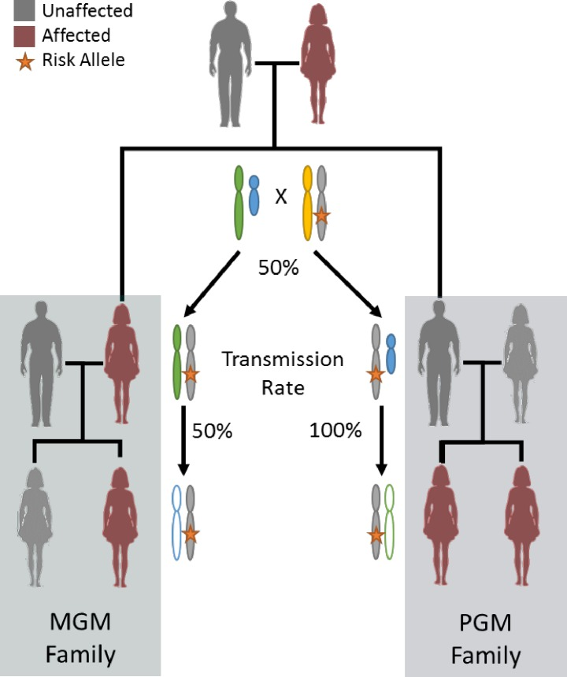
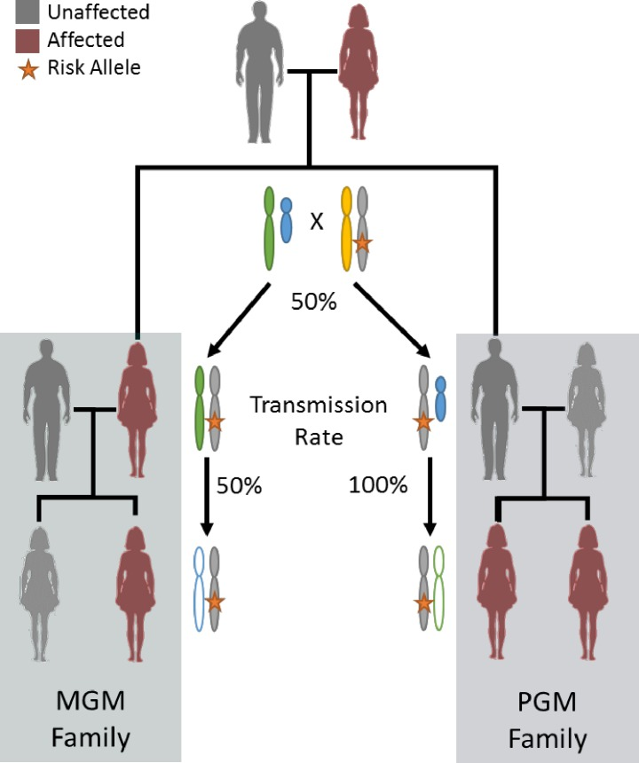

Genetics
Paternal lineage early onset hereditary ovarian cancers: a Familial Ovarian Cancer Registry study. PLoS Genetics. 2018 PMID:29447163.
Paternal lineage early onset hereditary ovarian cancers: a Familial Ovarian Cancer Registry study. PLoS Genetics. 2018 PMID:29447163.
• Eng KH, Corrada Bravo H, Keles S. Phylogenetic Mixture Model for the Evolution of Gene Expression Families. Molecular Biology and Evolution. 2009. 26(10):2363-2372. PMID: 19602540. • Corrada Bravo H, Wright S, Eng KH, Keles S, Wahba G. Estimating Tree Structured Covariance Matrices via Mixed-Integer Programming. Journal of Machine Learning Research. 2009. 5:41-48. PMID: 22081761.
• Ruggeri C, Eng KH. Inferring active and prognostic ligand-receptor pairs with interactions in survival regression models. Cancer Informatics. 2015. 13(S7): 67-75. PMID:25657571. • Eng KH, Tsuji T. Immunoreactive subset of advanced ovarian cancers is associated with prognosis and differential antigen expression. PLoS One. 2014. 9(11):e111586. PMID:24380171. • Eng KH, Ruggeri C. Connecting prognostic ligand receptor signaling loops in advanced ovarian cancer. PLoS One. 2014. 9(9): e107193. PMID:25244152. • Eng KH, Weir I, Tsuji T, Odunsi K. Immuno-stimulatory/regulatory gene expression patterns in advanced ovarian cancer. Genes & Cancer. 2015. 6(9-10): 399-407. PMID: 26622942.